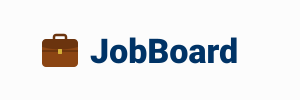
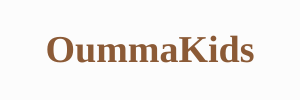

Job Board

Développement d’une plateforme de recrutement sur laquelle les candidats peuvent postuler aux offres d’emploi proposées. Réaliser dans le cadre d’un projet Epitech.
Voir le projetJ’aime découvrir de nouvelles choses, de nouvelles technologies et me challenger. Je suis investi dans mon travail et j'ai l'habitude du travail d’équipe. Actuellement en Master à Epitech, je suis quelqu'un de polyvalent, de motivé et de très curieux.
Si vous avez un projet, n’hésitez pas me contacter

Passionné par les technologies et la programmation, je souhaite continuer à développer mes
compétences
et acquérir de l’expérience dans le domaine du développement informatique.
Actuellement à
Epitech, le master que je suis s’inscrit dans cette démarche et me permet d’approfondir mes
connaissances à plusieurs niveaux.
Curieux et polyvalent, j’ai eu l’occasion d’évoluer dans différents secteurs, notamment
la restauration, la vente et le développement.
Ces expériences m’ont permis de développer mon
sens
du contact, ma capacité à travailler en équipe et mon aptitude à m’adapter à de nouveaux
environnements.
drwxr-xr-x 1 LS guess 4096 4096 Oct 10 job_board/
drwxr-xr-x 1 LS guess 4096 4096 May 16 oummakids/
drwxr-xr-x 1 LS guess 4096 4096 Apr 05 vet_emergency/

Développement d’une plateforme de recrutement sur laquelle les candidats peuvent postuler aux offres d’emploi proposées. Réaliser dans le cadre d’un projet Epitech.
Voir le projet
Développement d’une API REST dans le cadre du projet Oummakids, une plateforme de babysitting en ligne, lors d’un stage en back-end. L’application propose notamment un système de paiement et une messagerie instantanée.
Voir le projetCréation du site vitrine d’un vétérinaire urgentiste. Demande d’un particulier qui n’avait pas encore de site internet.
Voir le projet2026 - 2027 / EPITECH
2024 - 2026 / IMTS (INSITUT MAIRE-THÉRÈSE SOLACROUP)
Préparatoire au métier du numérique, puis obtention du titre professionnel Développeur Web et Web Mobile, développeur Front-end et Back-end.
2025 / MOOC ANSCII
MOOC Cybersécurité SecNumAcadémie de l'ANSSI (taux de réussite 100%).
2021 - 2022 / LYCÉE ALEXANDRE DUMAS
Mise à niveau (MAN) en Hôtelerie - Restauration, découverte de la gestion d'entreprise, cuisine de collectivitée et de restauration, ainsi que service à table.
2018 - 2021 / LYCÉE THÉODORE DECK
BAC Général, spécialisation Maths et Numérique et Sciences Informatique.
2026 - OUMMAKIDS
Développement d'une API REST dans le cadre du projet Oummakids, une plateforme de babysitting en ligne, lors d'un stage en back-end.
2025 - HÔTEL DU LAC
Serveur au petit-déjeuner, mise en place du buffet en salle ainsi que service client à table.
2024 - LA GRAPPE
Utilisation des fours hautes températures, préparations des plats ainsi que préparation des condiments. Nettoyage de la cuisine et des cuisines et du matériel.
2023 - 2024 POLYVALENT
Intérimaire dans plusieurs domaines, papeterie (3ma), poissonerie(Cora), charcuterie libre service (Super U), usine à la chaîne (Lisbeth), restauration rapide (Burger King), ainsi que les vendanges.
2023 - STARTLOC
Vente de contract, avec SAV client personnalisé. Prospection télephonique ainsi que prise en main du logiciel ZOHO.
Bon relationnel
Ouvert d'esprit
Curieux
Capacité d'apprentissage
Logique
Esprit d'équipe
Français - Natif
Anglais - B1
HTML
CSS
Javascript
TypeScript
PHP
SQL
Bash
Symphony
Prisma
MySql
MongoDB
PostreSQL
Docker
Figma
Git
VsCode
LLM
lucas.sand@epitech.eu
Location
35000 Rennes, France